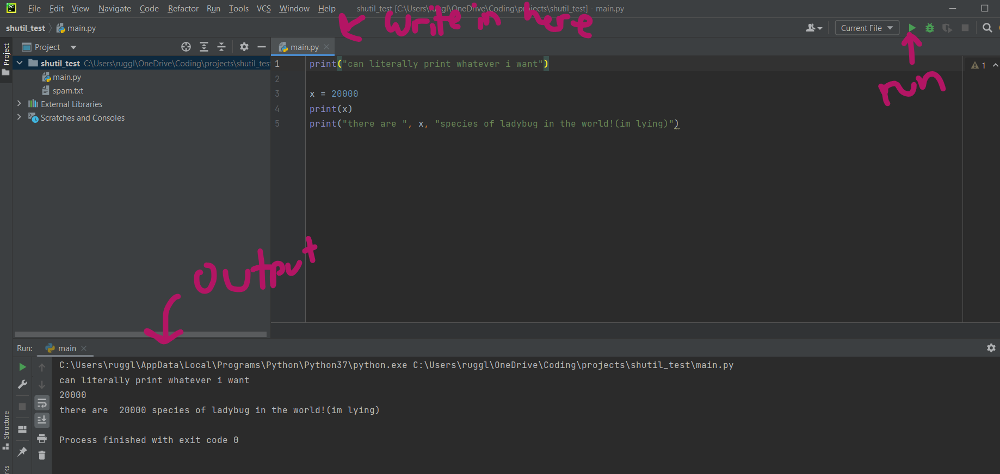

IDK how much you already know so I'll try to cover all the general concepts.
Side tangent: you don't gotta know this but I think its cool!
You already know that computers work by controlling electricity; but what that means in practice is literally just turning it off and on again like a bajillion different times simulatenously in a bunch of different places.
If you've heard of binary thats why we use it; electriicty can only be in one of two states either 1=electriicty flowing, or 0=not flowing.
There are only ever 2 potential states the electricity can be in; and you know what else comes in 2 states? True and False. So a long time ago we arbitrarily decided 1=true, 0=false.
So now instead of a bajillion "flowing" and "not flowing" indactors all of a sudden we have a way to represent true and flase. With enough true and false statements you can literally say or determine ANYTHING which is why computers are so dynamic.
int
